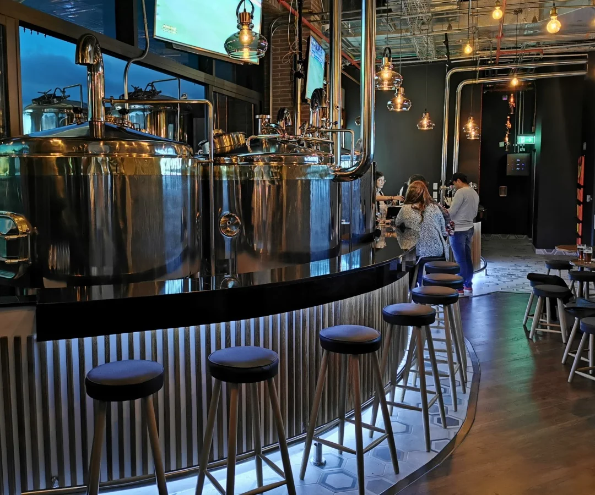

La Cerveceria
La cervecería inicio de manera casera y se elaboraron las primeras cervezas en equipos de 20 Litros, obteniendo muy buenos resultados y ganando la primera medalla de oro a nivel nacional. En 2017 con apoyo de Fondo Emprender, Patriota adquirió equipos de mayor tamaño e inició la operación con una capacidad de 1.000 Litros de cerveza por mes.
Actualmente la cervecería ha crecido de la mano de su restaurante en Samacá y de la presencia en múltiples establecimientos en Boyacá, Bogotá y Cundinamarca, alcanzando una capacidad de producción de 20.000 Litros de cerveza por mes que se distribuyen en presentaciones de lata y botella.